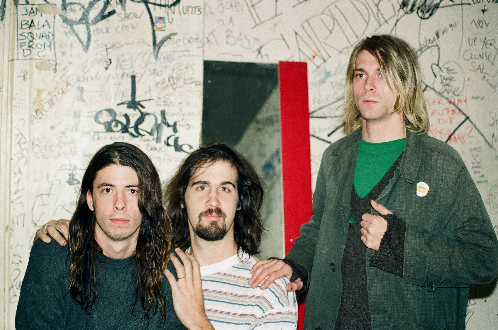

|  |
NirvanaNirvana best banda Nirvana best banda y si a ti no te gusta entonces... no se. |
| cancion | album |
|---|---|
| Smells like teen spirit | Nevermind |
| Come as you are | Nevermind |
| Heart-Shaped Box | In Utero |
| Lithium | Nevermind |
| About a girl | Bleach |
Nirvana fue una de las bandas mas famosas del rock. Fue catalogada como una banda grunge. La banda fue fundada por Kurt Cobain y Krist Novoselic los cuales fueron aceptando a diferentes bateristas hasta llegar a Dave Grohl. Los diferentes bateristas fueron Aaron Burckhard, Dale Crover, Dave Foster, Chad Channing y Dan Peters.
Nirvana lanzo su primer album en 1989 el cual tiene el nombre de "Bleach". Consiguieron vender al rededor de 5 millones de copias al nivel mundial. En el año 1991, la banda lanzo su proximo album, "Nevermind", el cual alcanzo ser uno de los mayores exitos en la banda. Su siguiente album, lanzado en 1993, no alcanzo las mismas ventas ni la misma popularidad que los otros dos albumes. Fue nombrado "In Utero".
Nirvana acabo cuando Kurt Cobain termino con su vida (debido al alcohol, drogas, depresion, etc.). Durante los siguientes años, la banda comenzo a ganar mas popularidad. Sus albumes fueron vendidos con al rededor de 80 millones de copias, "Nevermind" fue uno de los mas populares asi vendiendo al rededor de 32 millones de copias a nivel mundial. En 2014, Nirvana entro al salon de la fama del rock.
Kurt y Krist se conocieron en la escuela de Aberdeen High School. Kurt itento varias veces formar una banda con Krist, pero este nunca acepto hasta que Kurt le dio un demo de su banda, Fecal Matter. La banda tuvo varios nombres los cuales fueron Skid Row, Pen Chap Chew, Bliss, y Ted Ed Fred hasta llegar a Nirvana. Kurt dijo que queria que su banda tuviera un nombre que sonara mas agradable. Durante un tiempo, Kurt Y Krist estuvieron buscando bateristas asi logrando tener algunos y luego perdiendo contacto con ellos. Ambos publicaron un anuncio en un periodico de Seattle diciendo que buscaban baterista. Un amigo de ellos les recomendo a Chad Channing el cual rapidamente asistio a su primer show con Nirvana. Despues de un tiempo, Kurt y Krist mostraban insatisfaccion con Chad, el cual despues de algunos problemas suyos, dejo la banda. Dave Grohl fue presentado a Kurt y Krist y en cuanto escucharon su audicion creyeron que el era el baterista que buscaban. En 1991 lograron lanzar su famoso album "Nevermind".
Kurt tuvo unos problemas en su voz y la banda decidio no irse de gira por ahora pero asi decidiendo hacer varios shows a final de año. En febrero de 1992, la banda termino con su gira por el pacifico, asi haciendo que Kurt se casara con Courtney Love y que ambos tuvieran una hija llamada Frances Bean Cobain.
Kurt, Krist y Dave tuvieron algunos desacuerdos asi casi provocando la separacion de la banda. Ademas de eso, la gente empezo a crear rumores sobre la separacion de la banda por la salud de Kurt. En Festival de Reading, Nirvana toco uno de sus conciertos mas conocidos. Kurt entro en silla de ruedas y con peluca para simular los rumores sobre su salud para luego asi pararse y juntarse con Krist y Dave. La bnada toco canciones que aun no habian sacado + covers como "The Money Will Roll Right In" de Fang, "D-7" de Wipers y, en cuanto tocaron la intro de "Smells like teen Spirit" tocaron de 40 a 50 segundos "More Than a Feeling" de Boston (el riff es de cierta manera parecido). La banda penso que el concierto seria un desastre por los problemas que tuvieron en los meses anteriores.
En 1993, Nirvana toco en MTV Unplugged. Tocaron tres canciones suyas y el resto de otras bandas/artistas como David Bowie, Meat Puppets y The Vaselines.
El 5 de abril de 1994, Kurt dejo una nota de suicidio. Un electricista lo encontro muerto, aunque al inicio creyo que era un maniqui. Kurt se habia suicidado disparandose con una escopeta en la cabeza. Krist y Dave tomaron caminos diferentes despues de eso. Ambos se unieron a diferentes bandas pero el que mas tuvo exito fue Dave con la famosa banda Foo Fighters.
La rivalidad entre las dos bandas incio por los vocalistas y sus ideologias. Kurt estaba a favor de la igualdad y el feminismo mientras que Axl Rose escribia canciones con letra un tanto machista. Kurt se enojo cuando Axl menciono que era fan de Nirvana. Kurt menciono una vez que el y su banda no eran la tipica clase de banda del estilo de Guns n Roses, que no tenia absolutamente nada para decir. A Axl no le agradaban ese tipo de menciones y que ya estaba harto de que lo atacarn. Axl menciono que agradaban las bandas de Nirvana, Jane's Addiction y otras dos mas mientras que estas no le agardaban. Axl intento llamar a Nirvana para que se les uniese en su gira. Kurt dijo que no ya que no queria que su banda se convirtiera en algo como Gun n Roses. Kurt comenzo a hablar mal de Guns n Roses mientras que Axl le respondia. Dave comento que parecia pelea de secundaria.